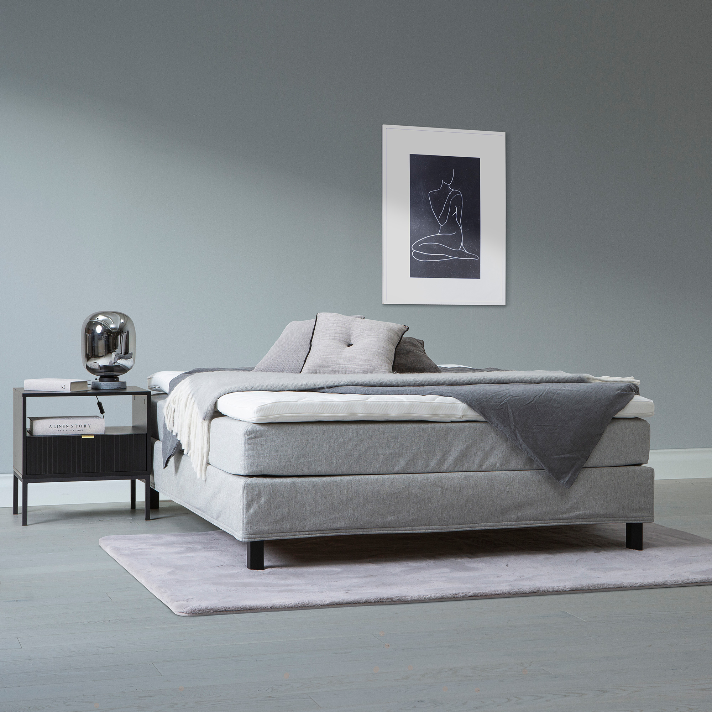
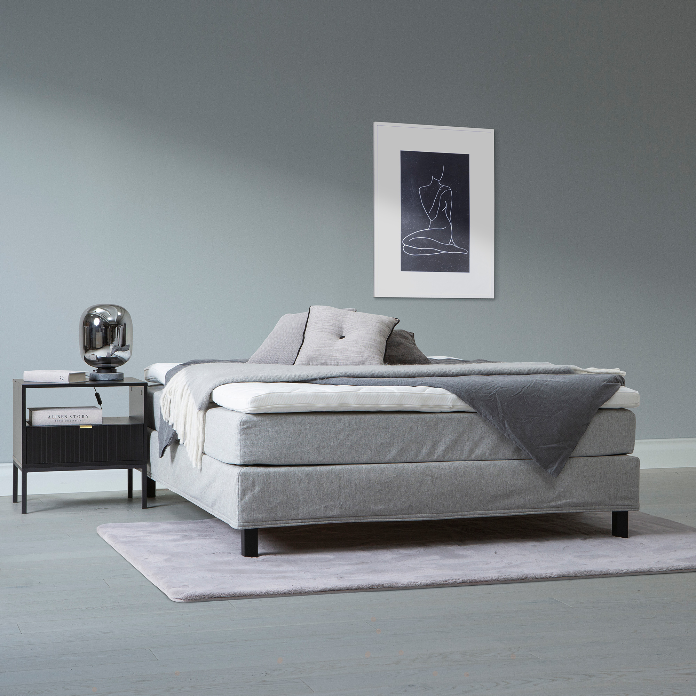

Moon Bronze continental bed 180x200, pocket, Primo 84 light grey
197740
 

Description
Experience superior comfort and elegant design with the Moon Bronze continental bed, sized 180x200 cm. This premium bed from the NEST & LIVING collection offers a high-quality pocket spring system without zones, ensuring a restful sleep. The bed rests on tall 15 cm black square legs which provide a modern, airy look while facilitating easy cleaning underneath. Upholstered in durable Primo 84 fabric in a stylish light grey tone, it blends seamlessly with various bedroom décors.
Designed for customization, the Moon Bronze can be enhanced with a selection of mattress toppers and headboards available separately, allowing you to tailor your sleeping experience to your personal preference. The bed frame combines durable wood and particle board materials backed by an exceptional 4000-day quality guarantee, affirming its lasting construction and reliability.
Maintenance is effortless with regular vacuuming and gentle wiping of the fabric, helping preserve its pristine condition and durability.
Elevate your bedroom ambiance with this versatile continental bed from NEST & LIVING, harmonizing functionality with modern style and providing excellent value for quality and comfort.
Technical specifications
| Tier | Bronze |
|---|---|
| Size | 180 × 200 cm |
| Upholstery Color | Light grey |
| Upholstery Material | Primo 84 fabric |
| Frame Material | Durable wood and particle board |
| Legs | 15 cm tall square black legs |
| Spring Type | Pocket spring without zones |
| Headboard | Not included (available separately) |
| Mattress Topper | Not included (available separately) |
| Quality Guarantee | 4000-day guarantee |
| Care Instructions | Regular vacuuming and wiping with a damp cloth recommended |